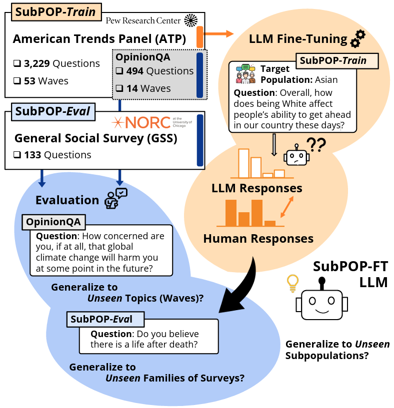

|
Joseph Suh
Hi there! I'm a third year Ph.D. student at BAIR in UC Berkeley, advised by Serina Chang and John Canny.
|
{kind=link}
Research |
|
|
Rethinking LLM Human Simulation: When a Graph is What You Need
Joseph Suh, Suhong Moon, Serina Chang Under Review arXiv / Code We identify a broad class of human simulation tasks currently addressed with LLMs—discrete choice prediction—and propose a graph-based modeling that matches or exceeds LLM-based approaches while offering added advantages. |
|
|
Deep Binding of Language Model Virtual Personas: a Study on Approximating Political Partisan Misperceptions
Minwoo Kang*, Suhong Moon*, Seung Hyeong Lee, Ayush Raj, Joseph Suh, David M. Chan, John Canny CoLM, 2025 arXiv / Code Expanding evaluations of LLM virtual personas to include ingroup / outgroup and meta-perception, "backstories" serve as a stepping stone to higher-order reflections in social context. |
|

|
Language Model Fine-Tuning on Scaled Survey Data for Predicting Distributions of Public Opinions
Joseph Suh*, Erfan Jahanparast*, Suhong Moon*, Minwoo Kang*, Serina Chang ACL long main, 2025 arXiv / Code / Dataset (SubPOP) Fine-tuning LLMs on response distributions from public opinion survey questions enables the models to predict opinions across different subpopulations, survey waves, and survey families. |
|
|
Rediscovering the Latent Dimensions of Personality with Large Language Models as Trait Descriptors
Joseph Suh*, Suhong Moon*, Minwoo Kang*, David M. Chan NeurIPS Workshop on Behavioral ML, 2024 arXiv Constructing latent dimensions of personality using log-probabilities from language models, inspired by the methodology psychologists used to develop the Big Five model. |
|
|
Virtual Personas for Language Models via an Anthology of Backstories
Suhong Moon*, Minwoo Kang*, Marwa Abdulhai*, Joseph Suh*, Widyadewi Soedarmadji, Eran Kohen Behar, David M. Chan, John Canny EMNLP long main, 2024 arXiv / Code / Blog We propose naturalistic bodies of text describing individual life stories, namely "backstories", as prefix to model prompts for persona conditioning. |
|
|
Long-range-interacting topological photonic lattices breaking channel-bandwidth limit
Gyunghun Kim, Joseph Suh, Dayeong Lee, Namkyoo Park*, Sunkyu Yu* Nature Light: Science & Applications, 2024 Journal link A photonic lattice with non-nearest-neighbor interactions that breaks the tradeoff between topological channels and channel bandwidths. |

|
Photonic topological spin pump in synthetic frequency dimensions
Joseph Suh, Gyunghun Kim, Hyungchul Park, Shanhui Fan, Namkyoo Park*, Sunkyu Yu* Physical Review Letters, 2024 Journal link Theoretical modeling of Laughlin's topological pump in synthetic frequency dimensions by the interplay of frequency mode-dependent and independent gauge fields. |
Education |
|
University of California, Berkeley Ph.D. program in Electrical Engineering and Computer Sciences Berkeley Artificial Intelligence Research Lab (BAIR) Advisors: Prof. Serina Chang and Prof. John Canny 09/2023 – Present |
|
Seoul National University B.S. in Electrical & Computer Engineering Advisor: Prof. Sunkyu Yu 03/2017 – 03/2023 |
|
Gyeonggi Science High Schhol 03/2014 – 03/2017 |
About me |
| Before joining to Berkeley, I graduated from Seoul National University with a B.S. in Electrical and Computer Engineering, although I spent more time in the Physics building. In my undergrad years, I was honored to work with Prof. Sunkyu Yu in the field of photonics and condensed matter physics. Before my undergrad, I was a big fan of competitive programming, inspired by my close friends—some of whom continue pursuing their passions in theoretical computer science. |
Honors and Awards |
|
KFAS Doctoral Study Abroad Scholarship | 2023
Around 40 students selected nationally |
| Presidential Science Scholarship | 2017 |
Blog |
|
CUDA kernel fusion
Lessons learned from implementing back-to-back GEMM kernel for LoRA serving in vLLM inference engine. Given a skinny matrix A and a fat matrix B, how can we make xAB into a single kernel? |
|
CS280A portfolio
Assignments and projects. Pretty much enjoyed hands-on experience, like warping, diffusion, GANs. |
|
Powered by Jon Barron's theme. |